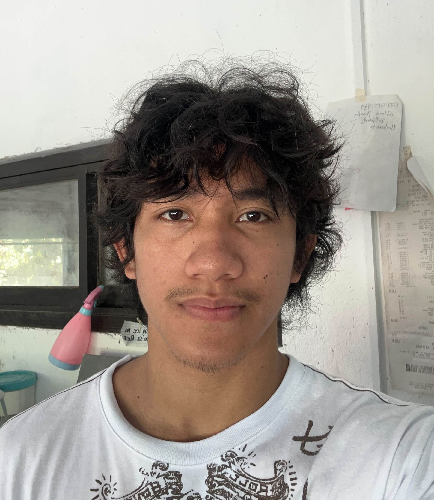

➤ My Goals
My short-term goal is to improve my situation and become more financially secure. My long-term goal is to build a successful future where I can be financially stable and independent.
PRECISION MODE ACTIVATED
Hello, I'm
I'm Mark Ghil S. Madera. I enjoy solving challenging problems, exploring technology, and finding ways to improve myself. My goal is to become financially independent and build a better future.
EXPLORE MY PORTFOLIO ↗ CONTACT MEAIM HIGH. STAY FOCUSED. KEEP MOVING FORWARD.

01 / ABOUT ME
Hi, I'm Mark. I like solving complex problems and working toward the goals I set for myself. Looking at my reflection reminds me to stay motivated, take action, and keep moving forward.
My short-term goal is to improve my situation and become more financially secure. My long-term goal is to build a successful future where I can be financially stable and independent.
I am motivated by seeing how far I have come and by the person I want to become. Starting is important to me because once I take the first step, I want to keep learning and moving forward.
02 / PERSONAL INFORMATION
Full Name: Mark Ghil S. Madera
Age: 18
Birthplace: Balanga, Bataan
Nationality: Filipino
Occupation: Work-from-home worker
Address: Cabilaoan, Laoac, Pangasinan
Languages: Tagalog and English
Motto: Keep moving forward and stay true to yourself.
My family supports my daily needs and respects my decisions. Their support encourages me to work toward my goals and become more independent.
Working out, gaming, and creating content.
I am interested in Information Technology because I enjoy exploring complex problems and finding solutions through technology.
03 / OBJECTIVES
My mission is to build a successful and financially stable future. I plan to keep learning, improve my IT skills, gain useful experience, and work hard toward becoming financially independent.
04 / EDUCATIONAL BACKGROUND
CURRENT
First-Year Bachelor of Science in Information Technology (BSIT)
Developing my knowledge of information technology and problem-solving.
COMPLETED
Senior High School graduate
COMPLETED
Junior High School
COMPLETED
Elementary education
05 / WORK EXPERIENCES
WORK EXPERIENCE
I gained experience in construction work and learned that reaching financial success takes time, patience, and consistent effort.
WORK EXPERIENCE
Working in farming helped me appreciate the effort required to care for crops and the importance of patience and responsibility.
WORK EXPERIENCE
This role gave me exposure to service work and the importance of staying attentive, organized, and respectful when dealing with people.
06 / SKILLS
Qualities that help me learn, work, and improve.
Looking for practical solutions.
Learning from new experiences.
Continuing even when things are difficult.
Working toward personal goals.
Taking tasks and commitments seriously.
Exploring new ideas and content.
07 / CERTIFICATIONS
A personal or informal recognition. Add the official certificate details if available.
Recognized for placing second in an inter-barangay Mobile Legends: Bang Bang tournament.
08 / AWARDS & ACHIEVEMENTS
A playful title or recognition associated with technology and gaming.
A fun personal recognition.
A recognition for helping maintain peace and understanding.
A recognition reflecting a range of interests and abilities.
09 / CONTACT
GET IN TOUCH
Feel free to connect with me about technology, gaming, content creation, projects, or future opportunities.
✉ SEND AN EMAIL ↗